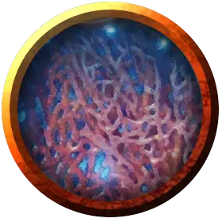

Келпи
Kelpie
Среднее Растение, нейтрально-злое

Класс Доспеха 14 (природный доспех)
Хиты 67 (9к8 + 27)
Скорость 10 футов, плавая 30 футов
| мод | спас | ||
|---|---|---|---|
| СИЛ | 14 | +2 | +2 |
| ЛОВ | 14 | +2 | +2 |
| ТЕЛ | 16 | +3 | +3 |
| мод | спас | ||
|---|---|---|---|
| ИНТ | 7 | −2 | −2 |
| МДР | 12 | +1 | +1 |
| ХАР | 10 | +0 | +0 |
Навыки Восприятие +3, Скрытность +4
Сопротивление урону огонь; дробящий, колющий
Иммунитет к состояниям глухота, истощение, ослепление
Чувства слепое зрение 60 футов, пассивное Восприятие 13
Языки Общий, Сильван
Опасность 4 (1100 опыта)
Бонус мастерства +2
Особенности
Амфибия. Келпи может дышать и воздухом, и под водой.
Обманчивая внешность. Пока Келпи неподвижен в своем истинном облике, он неотличим от обыкновенных водорослей.
Форма морских водорослей. Келпи может действием придать своему телу вид Маленького или Среднего Гуманоида, или принять свой истинный облик. Его блок статистики остаётся неизменным. Маскировка остаётся убедительной, пока келпи не находится на ярком свету, или наблюдатель не оказывается в пределах 30 футов от него. В этом случае становятся видны спайки между нитями водорослей. Келпи примает свой истинный облик бонусным действием, или когда умирает.
Действия
Мультиатака. Келпи совершает две атаки Размашистым ударом.
Размашистый удар. . Рукопашная атака оружием: +4 к попаданию, досягаемость 10 фт, одна цель. Попадание: 11 (2к8 + 2) колющего урона. Если цель — существо Среднего размера или меньше, она становится схваченной (Сл высвобождения 12).
Утопление под гипнозом. Келпи выбирает одно видимое им существо в пределах 150 футов. Если цель видит келпи, она должна преуспеть в спасброске Мудрости Сл 11, иначе становится магическим образом очарованным им, пока келпи поддерживает концентрацию, вплоть до 10 минут (как при концентрации на заклинании).
Пока цель очарована, она недееспособна, и вместо того, чтобы задержать дыхание под водой, она пытается дышать как обычно. Если цель не может дышать под водой, она начинает задыхаться.
Если очарованная цель находится более чем в 5 футах от келпи, цель должна в свой ход переместиться к ней кратчайшим маршрутом. Она не избегает провоцированных атак.
Перед перемещением в причиняющую урон местность, такую как лава или яма, а также при получении урона из любого источника кроме этого келпи цель может повторить спасбросок. Очарованное существо также может повторять спасбросок в конце каждого своего хода. Если спасбросок был успешным, эффект заканчивается.
Преуспевшая в спасброске цель получает иммунитет к гипнозу этого келпи на следующие 24 часа.
Описание
Келпи («Гора Белый Шлейф») — это вид разумных водных растений, напоминающих комок влажных морских водорослей. Они способны придать свое- му телу различную форму, часто принимая облик прекрасного гуманоида, чтобы заманить людей на большую глубину.